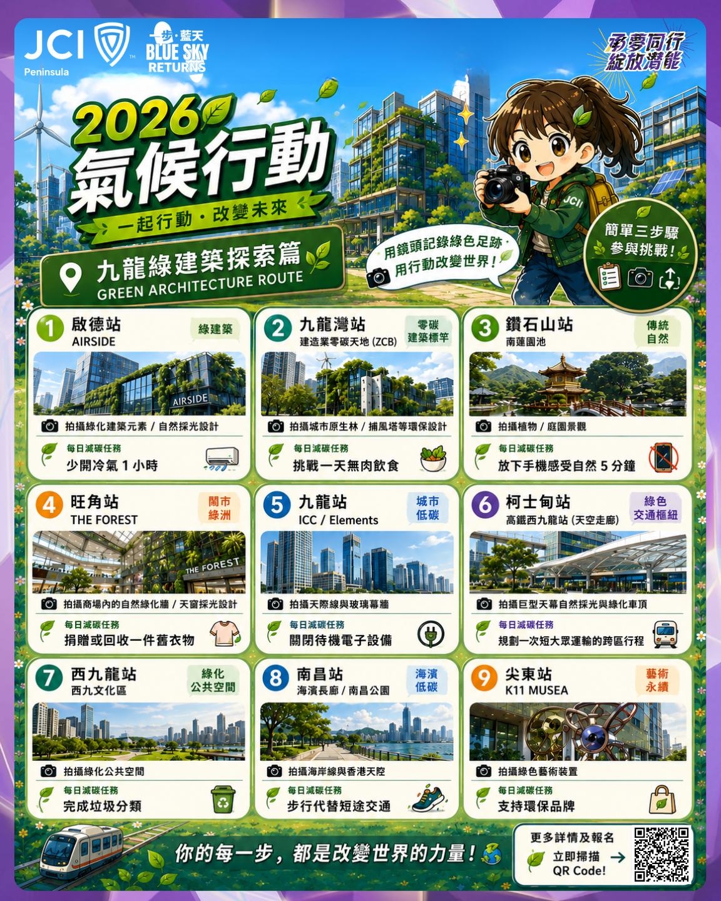

Blue Sky Returns
2026 氣候行動介紹
中
EN
Menu / 選單
中
EN
返回 Eco-MBTI
1 / 6

上一張
下一張
九龍綠建築探索篇
Step 1
從路線任務開始看懂活動內容
每一張圖都代表活動中的一個重點，讓使用者知道這不是只有線上測驗，而是可以延伸到真實世界的氣候行動。
看完就可以做什麼？
完成測驗後，你可以再回到活動頁，依照這些路線與任務去參與、拍照、分享與集氣。
立即參與
稍後再看